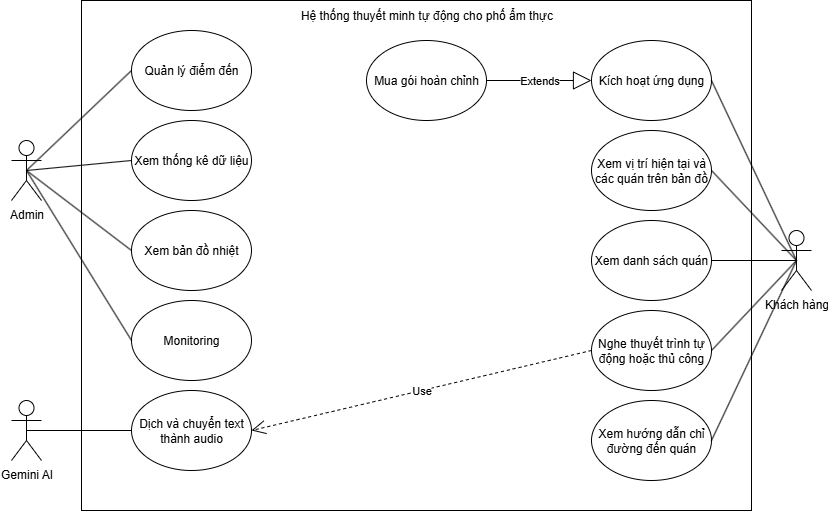
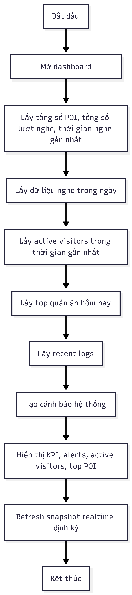
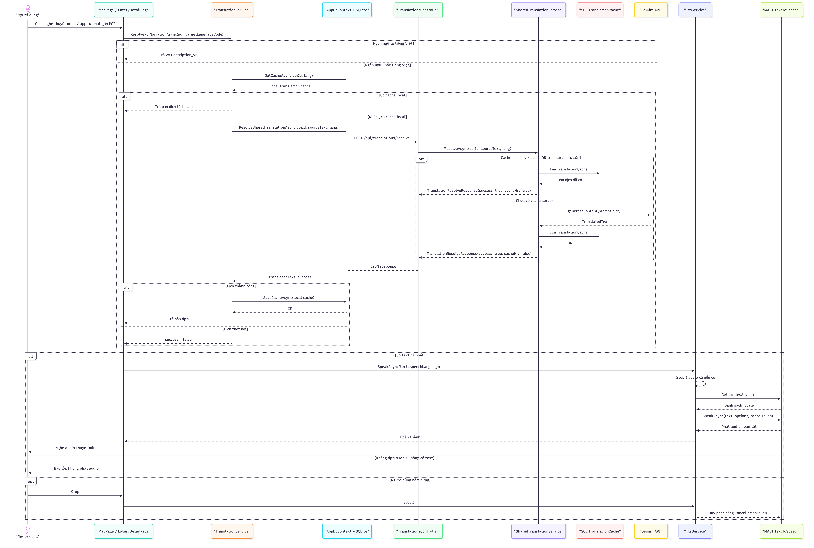
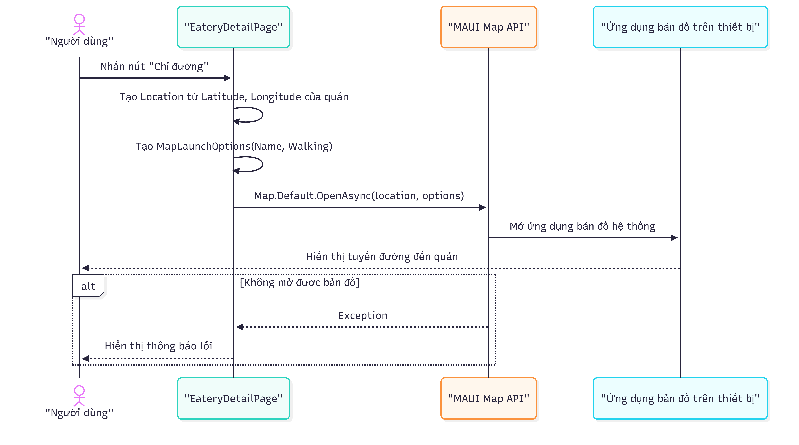
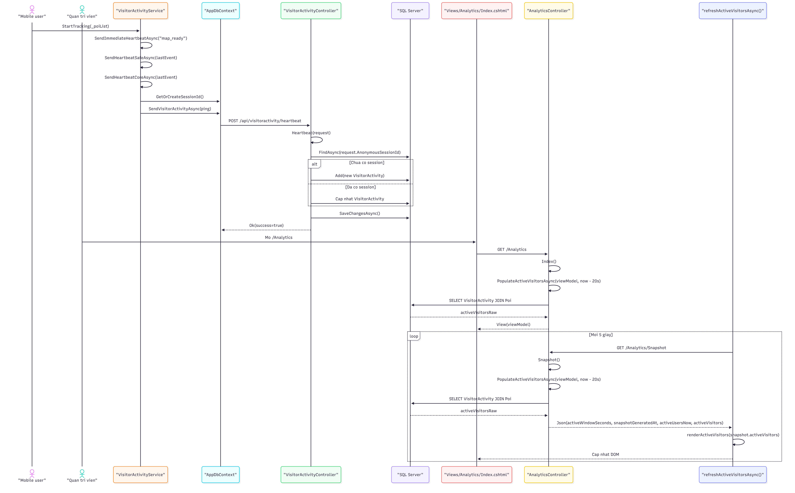
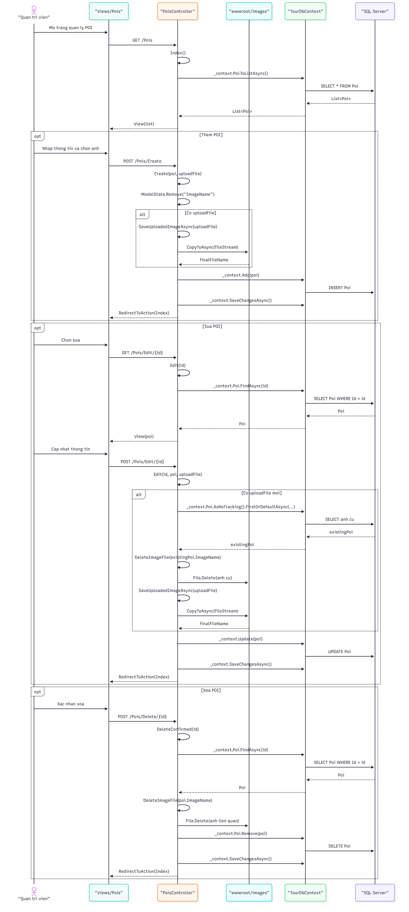
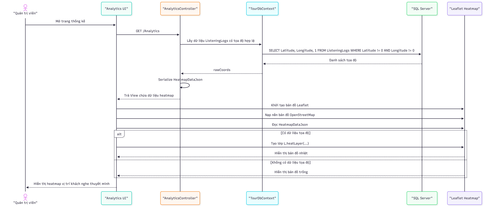
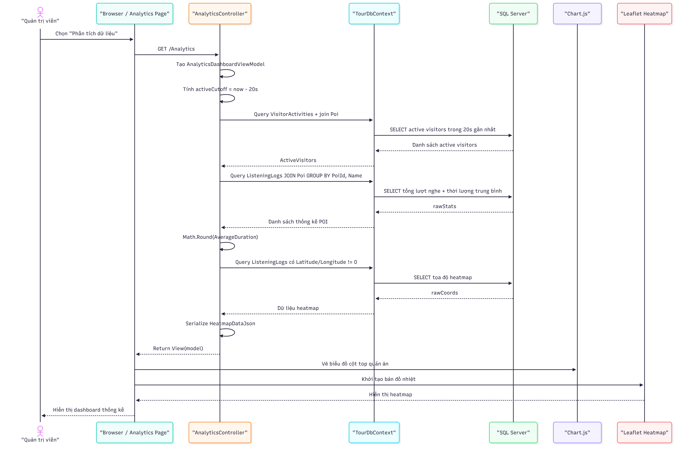

Bản HTML này ưu tiên tính đọc được khi demo: mọi nội dung PRD nằm trong một trang duy nhất, phần sơ đồ dùng ảnh có sẵn để chạy offline ổn định và có thể bấm phóng to khi xem trên máy chiếu.
1. Thông tin tài liệu
- Tên sản phẩm:
VinhKhanhTourGuide - Loại sản phẩm: Hệ thống fullstack hỗ trợ tham quan ẩm thực theo vị trí thực tế
- Kiến trúc:
Mobile App (MAUI) + Web API + Web Admin MVC + SQL Server + SQLite local - Mục đích tài liệu: Đặc tả yêu cầu sản phẩm ở mức đủ chi tiết để triển khai, kiểm thử, báo cáo đồ án và demo nghiệm thu
- Ghi chú: Tài liệu này không lặp lại các sơ đồ sequence, activity hay class diagram đã được xây dựng riêng
2. Bối cảnh và bài toán
Khu ẩm thực Vĩnh Khánh là một địa điểm có mật độ quán ăn cao, trải nghiệm thực tế phụ thuộc nhiều vào việc người dùng biết quán nào nổi bật, vị trí ở đâu, món nào nên thử và cách di chuyển đến điểm tiếp theo. Ở trạng thái truyền thống, khách phải tự tìm thông tin rời rạc từ biển hiệu, mạng xã hội hoặc người quen, dẫn đến trải nghiệm thiếu mạch lạc và khó chuẩn hóa.
Đồ án hướng tới việc xây dựng một hệ thống thuyết minh ẩm thực theo vị trí, trong đó:
- Quản trị viên quản lý tập trung dữ liệu quán ăn và nội dung thuyết minh.
- Ứng dụng di động hiển thị bản đồ, vị trí hiện tại, danh sách quán gần người dùng và hỗ trợ chỉ đường.
- Hệ thống tự động phát thuyết minh khi người dùng đi vào vùng geofence của quán hoặc cho phép phát thủ công.
- Nội dung có thể được dịch sang ngôn ngữ khác và phát lại bằng text-to-speech.
- Hệ thống ghi nhận analytics và trạng thái hoạt động hiện tại để hỗ trợ giám sát.
3. Tầm nhìn sản phẩm
Xây dựng một trợ lý tham quan ẩm thực số cho khu Vĩnh Khánh, giúp người dùng vừa di chuyển vừa khám phá quán ăn thông qua bản đồ, chỉ đường, thuyết minh tự động, bản dịch đa ngôn ngữ và dashboard theo dõi dữ liệu ở phía quản trị.
4. Mục tiêu sản phẩm
4.1. Mục tiêu nghiệp vụ
- Số hóa danh sách điểm đến ẩm thực tại khu Vĩnh Khánh.
- Cung cấp trải nghiệm hướng dẫn tham quan trực quan ngay trên điện thoại.
- Tăng tính hấp dẫn của trải nghiệm bằng thuyết minh tự động theo vị trí.
- Hỗ trợ người dùng quốc tế qua cơ chế dịch nội dung và phát âm thanh đa ngôn ngữ.
- Hỗ trợ quản trị viên theo dõi dữ liệu sử dụng và hoạt động thực tế của người dùng.
4.2. Mục tiêu kỹ thuật
- Xây dựng hệ thống fullstack tách rõ 3 phần: mobile, API, admin.
- Đảm bảo ứng dụng vẫn hoạt động được trong điều kiện mạng yếu hoặc mất mạng tạm thời.
- Tối ưu thời gian phản hồi nhờ cache local trên mobile và cache dùng chung trên server.
- Có khả năng mở rộng danh sách quán ăn, ngôn ngữ và dashboard trong các giai đoạn tiếp theo.
4.3. Chỉ số thành công mục tiêu
- Quản trị viên thêm hoặc sửa một POI trên Web Admin và dữ liệu đó có thể được mobile sử dụng ở lần tải dữ liệu kế tiếp.
- Người dùng mở app, xem được bản đồ, vị trí hiện tại và danh sách quán trong một phiên demo thực địa ổn định.
- Khi người dùng đi vào vùng geofence hợp lệ, hệ thống có thể tự động phát thuyết minh cho đúng quán mục tiêu.
- Khi thiết bị dùng ngôn ngữ khác tiếng Việt, hệ thống trả được nội dung dịch hợp lệ hoặc fallback an toàn mà không làm crash app.
- Dashboard admin phản ánh được log nghe, active visitors và heatmap từ dữ liệu mobile gửi lên.
- Toàn bộ luồng demo từ quản trị dữ liệu -> mobile sử dụng -> analytics -> dashboard được thực hiện end-to-end.
5. Phạm vi đồ án
5.1. Trong phạm vi
- Quản lý điểm đến ẩm thực (POI) trên Web Admin.
- Upload, thay thế và xóa ảnh minh họa của POI.
- Cung cấp API danh sách POI cho mobile.
- Hiển thị bản đồ, vị trí hiện tại và các quán trên mobile.
- Hiển thị danh sách quán ăn theo khoảng cách gần người dùng.
- Chỉ đường từ vị trí hiện tại đến quán qua ứng dụng bản đồ trên thiết bị.
- Phát thuyết minh tự động khi người dùng vào vùng geofence.
- Phát thuyết minh thủ công tại màn hình chi tiết quán.
- Dịch nội dung tiếng Việt sang ngôn ngữ mục tiêu thông qua API dịch.
- Cache bản dịch tại mobile và tại server.
- Phát audio bằng text-to-speech của hệ điều hành.
- Gửi analytics sau phiên nghe.
- Gửi heartbeat monitoring để theo dõi active visitor.
- Hiển thị dashboard analytics, active users và heatmap ở Web Admin.
- Mở khóa gói đầy đủ để tải toàn bộ dữ liệu quán ăn.
5.2. Ngoài phạm vi hiện tại
- Thanh toán thật với cổng thanh toán thương mại.
- Đăng nhập người dùng cuối.
- Quản lý nhiều khu du lịch độc lập trong cùng một hệ thống.
- Đồng bộ dữ liệu theo tài khoản cloud cho mỗi người dùng.
- Đề xuất lộ trình tham quan tối ưu nhiều điểm đến.
- Bình luận, đánh giá quán ăn từ phía người dùng.
6. Đối tượng sử dụng
6.1. Người dùng cuối
- Khách du lịch nội địa muốn xem quán gần mình và nghe giới thiệu tự động.
- Khách quốc tế cần nội dung được dịch sang ngôn ngữ của thiết bị.
- Người dùng cần chỉ đường nhanh đến từng quán mà không phải tự tìm kiếm.
6.2. Quản trị viên
- Người nhập và cập nhật dữ liệu quán ăn.
- Người theo dõi tình hình sử dụng ứng dụng, số lượt nghe, active users và heatmap.
6.3. Hội đồng / giảng viên / người chấm đồ án
- Cần đánh giá tính đầy đủ của kiến trúc, logic nghiệp vụ, khả năng demo và tính ứng dụng thực tế.
7. Giá trị cốt lõi của hệ thống
- Trải nghiệm khám phá theo vị trí thực tế thay vì chỉ xem danh sách tĩnh.
- Nội dung thuyết minh được tự động kích hoạt, giảm thao tác cho người dùng.
- Khả năng hỗ trợ đa ngôn ngữ mà không phải chuẩn bị sẵn toàn bộ nội dung cho từng ngôn ngữ.
- Offline-first giúp ứng dụng vẫn có giá trị trong điều kiện mạng không ổn định.
- Dashboard quản trị giúp sản phẩm không chỉ là app demo mà còn có vòng quản trị dữ liệu và theo dõi vận hành.
8. Kiến trúc sản phẩm ở mức nghiệp vụ
8.1. Mobile App
Chịu trách nhiệm tương tác trực tiếp với người dùng cuối:
- Xin quyền vị trí.
- Tải và cache dữ liệu quán ăn.
- Hiển thị bản đồ và danh sách quán.
- Theo dõi vị trí hiện tại.
- Phát hiện geofence và tự động phát thuyết minh.
- Mở trang chi tiết quán để phát audio thủ công hoặc mở chỉ đường.
- Gửi analytics và monitoring heartbeat về server.
8.2. Web API
Chịu trách nhiệm làm lớp trung gian nghiệp vụ và dữ liệu:
- Trả danh sách POI cho mobile.
- Ghi nhận analytics.
- Nhận heartbeat monitoring.
- Điều phối dịch nội dung và quản lý translation cache.
- Cung cấp endpoint health check để giám sát trạng thái dịch vụ.
8.3. Web Admin
Chịu trách nhiệm quản trị nội dung và theo dõi vận hành:
- CRUD điểm đến.
- Quản lý ảnh quán ăn.
- Theo dõi tổng lượt nghe, thời lượng trung bình, active visitors.
- Hiển thị heatmap vị trí nghe.
- Xóa active sessions khi cần làm sạch dữ liệu hiển thị.
9. Giả định và ràng buộc
9.1. Giả định
- Người dùng mang điện thoại Android có bật GPS và Internet trong phần lớn thời gian trải nghiệm.
- Nội dung gốc luôn được viết bằng tiếng Việt.
- Dữ liệu POI đủ nhỏ để có thể cache hoàn toàn trên thiết bị.
- Số lượng quán ăn trong đồ án ở mức vừa phải, phù hợp mô hình một tuyến phố ẩm thực.
9.2. Ràng buộc
- Text-to-speech phụ thuộc engine có sẵn trên thiết bị.
- Độ chính xác GPS có thể bị ảnh hưởng bởi môi trường thực địa.
- Chức năng mua gói đầy đủ hiện là mô phỏng mở khóa nội bộ, chưa phải thanh toán thật.
- Hạ tầng triển khai hiện tại phù hợp đồ án và demo, chưa tối ưu cho production scale.
10. Personas và nhu cầu chính
10.1. Persona A: Khách tham quan mới
- Muốn biết quanh mình có quán nào đáng chú ý.
- Muốn mở bản đồ và nhìn thấy quán ngay lập tức.
- Muốn nghe giới thiệu mà không phải bấm quá nhiều.
10.2. Persona B: Khách quốc tế
- Không đọc tốt tiếng Việt.
- Cần nội dung được dịch sang ngôn ngữ quen thuộc.
- Cần audio để nghe thay vì đọc dài trên màn hình.
10.3. Persona C: Quản trị viên nội dung
- Muốn chỉnh sửa nhanh dữ liệu quán và ảnh.
- Muốn biết quán nào được nghe nhiều.
- Muốn biết hiện tại có người dùng nào đang hoạt động trong khu vực hay không.
11. User stories chính
11.1. Dành cho khách du lịch
- Là người dùng, tôi muốn xem vị trí hiện tại và các quán trên bản đồ để định hướng nhanh trong khu ẩm thực.
- Là người dùng, tôi muốn xem danh sách quán gần mình để chọn quán thuận tiện nhất.
- Là người dùng, tôi muốn hệ thống tự phát thuyết minh khi tôi đến gần quán để có trải nghiệm rảnh tay.
- Là người dùng, tôi muốn chủ động bấm phát thuyết minh trong trang chi tiết để nghe lại khi cần.
- Là người dùng, tôi muốn mở chỉ đường đến quán bằng ứng dụng bản đồ trên điện thoại.
- Là người dùng quốc tế, tôi muốn nghe nội dung bằng ngôn ngữ của máy để dễ hiểu hơn.
- Là người dùng, tôi muốn dừng audio bất kỳ lúc nào nếu không muốn nghe tiếp.
- Là người dùng, tôi muốn mở khóa gói đầy đủ để xem và nghe toàn bộ quán ăn.
11.2. Dành cho quản trị viên
- Là quản trị viên, tôi muốn thêm, sửa, xóa điểm đến để dữ liệu luôn mới.
- Là quản trị viên, tôi muốn quản lý ảnh quán ăn để tăng tính trực quan.
- Là quản trị viên, tôi muốn xem thống kê lượt nghe và thời lượng trung bình theo quán.
- Là quản trị viên, tôi muốn xem bản đồ nhiệt để biết khu vực người dùng tương tác nhiều.
- Là quản trị viên, tôi muốn xem active visitors realtime để theo dõi hoạt động tại hiện trường.
12. Danh sách chức năng chi tiết
12.1. Phân hệ Mobile App
F1. Khởi tạo ứng dụng
- Ứng dụng mở vào
AppShellvà hiển thịMapPage. - Hệ thống kiểm tra quyền vị trí khi người dùng vào màn hình chính.
- Nếu chưa có quyền, ứng dụng yêu cầu cấp quyền.
- Nếu người dùng từ chối, ứng dụng thông báo rằng bản đồ không thể hoạt động đầy đủ.
F2. Xem vị trí hiện tại và các quán trên bản đồ
- Bản đồ phải hiển thị vị trí hiện tại của người dùng.
- Ứng dụng phải hiển thị pin của các quán ăn lấy từ dữ liệu đã đồng bộ.
- Hệ thống phải di chuyển camera bản đồ đến vùng trung tâm phù hợp khi vào màn hình.
- Nếu có lỗi tạm thời ở GPS, bản đồ vẫn hiển thị danh sách pin đã có.
F3. Xem danh sách quán ăn
- Ứng dụng hiển thị danh sách quán ở bottom sheet.
- Danh sách gồm tên quán, ảnh và khoảng cách đến người dùng.
- Nếu lấy được vị trí hiện tại, danh sách phải được sắp theo khoảng cách gần nhất.
- Nếu không lấy được vị trí, danh sách vẫn hiển thị theo dữ liệu hiện có.
F4. Xem chi tiết quán
- Khi chọn một quán, người dùng vào trang chi tiết.
- Trang chi tiết hiển thị thông tin quán và các hành động chính.
- Tại trang chi tiết, người dùng có thể phát audio thủ công hoặc mở chỉ đường.
F5. Chỉ đường đến quán
- Hệ thống tạo đối tượng
Locationtừ tọa độ quán. - Hệ thống gọi ứng dụng bản đồ mặc định của thiết bị.
- Nếu mở thành công, người dùng nhìn thấy tuyến đường.
- Nếu mở thất bại, ứng dụng hiển thị thông báo lỗi thân thiện.
F6. Thuyết minh tự động theo geofence
- Ứng dụng quét GPS định kỳ.
- Nếu người dùng đi vào vùng hợp lệ của một hoặc nhiều POI, hệ thống chọn POI mục tiêu.
- Luật chọn POI mục tiêu:
- Quán phải nằm trong
GeofenceRadius. - Nếu nhiều quán hợp lệ, ưu tiên
Prioritynhỏ hơn. - Nếu trùng
Priority, chọn quán gần nhất. - Khi một POI được chọn, ứng dụng phát audio tự động.
- Hệ thống áp dụng cooldown để tránh lặp lại quá dày.
F7. Thuyết minh thủ công
- Trong trang chi tiết, người dùng có thể bấm nút phát audio.
- Hệ thống giải quyết nội dung theo ngôn ngữ hiện tại và phát lại qua TTS.
- Người dùng có thể dừng thủ công trong khi phát.
F8. Dịch nội dung
- Nếu ngôn ngữ đích là tiếng Việt, hệ thống dùng trực tiếp
Description_VN. - Nếu ngôn ngữ đích khác tiếng Việt, hệ thống kiểm tra cache local trước.
- Nếu local cache không có, ứng dụng gọi API dịch dùng chung.
- Sau khi dịch thành công, bản dịch phải được lưu vào local cache để tái sử dụng.
- Nếu dịch thất bại, hệ thống trả lỗi và không phát audio.
F9. Phát audio bằng TTS
- Hệ thống dùng TTS mặc định của hệ điều hành.
- Hệ thống phải chọn locale phù hợp với mã ngôn ngữ yêu cầu.
- Khi bắt đầu một audio mới, hệ thống phải dừng audio cũ nếu đang phát.
- Nếu người dùng bấm dừng, audio phải hủy bằng cancellation token.
F10. Analytics
- Sau một phiên nghe hoàn tất hoặc bị dừng ở luồng tự động, ứng dụng gửi
ListeningLoglên API. - Dữ liệu gửi gồm
PoiId,AnonymousSessionId,DurationSeconds,Latitude,Longitude.
F11. Monitoring heartbeat
- Ứng dụng phải gửi heartbeat định kỳ để server biết tình trạng hoạt động hiện tại.
- Heartbeat gồm vị trí hiện tại, POI gần nhất, trạng thái nghe, sự kiện gần nhất và nền tảng thiết bị.
- Heartbeat được dùng cho dashboard active visitors phía admin.
F12. Mua gói hoàn chỉnh / mở khóa premium
- Khi người dùng chọn mua gói đầy đủ, ứng dụng hiển thị hộp thoại xác nhận.
- Nếu thành công, hệ thống lưu cờ premium vào
Preferences. - Sau khi mở khóa, ứng dụng tải lại dữ liệu và hiển thị đầy đủ quán ăn.
- Ở phạm vi đồ án hiện tại, bước thanh toán là mô phỏng.
12.2. Phân hệ Web API
F13. Cung cấp danh sách POI
- Endpoint trả toàn bộ danh sách POI.
- Dữ liệu trả về gồm tên quán, ảnh, mô tả, tọa độ, bán kính geofence và priority.
- API phải trả kèm
ImageUrlđầy đủ để mobile tải ảnh.
F14. Ghi nhận listening log
- API nhận log analytics từ mobile.
- Server gán thời gian nhận thực tế vào
ListenAt. - Nếu dữ liệu không hợp lệ, trả lỗi phù hợp.
F15. Ghi nhận visitor activity heartbeat
- API nhận heartbeat từ mobile.
- Nếu session chưa tồn tại, tạo mới.
- Nếu session đã tồn tại, cập nhật bản ghi hiện tại.
- API phải đảm bảo bảng
VisitorActivitytồn tại trước khi ghi.
F16. Dịch nội dung
- API nhận yêu cầu dịch gồm
PoiId,SourceText,TargetLanguageCode. - Nếu ngôn ngữ là
vi, API trả ngay nội dung gốc. - API phải ưu tiên memory cache rồi đến DB cache.
- Nếu chưa có cache, API gọi dịch vụ Gemini.
- Sau khi dịch thành công, API lưu translation cache dùng chung để các thiết bị khác dùng lại.
F17. Health check
- API phải có endpoint health để kiểm tra khả năng kết nối DB và trạng thái cơ bản của dịch vụ.
12.3. Phân hệ Web Admin
F18. Quản lý điểm đến
- Quản trị viên xem danh sách POI.
- Có thể thêm mới POI với thông tin và ảnh.
- Có thể sửa thông tin, thay ảnh, giữ hoặc cập nhật priority và bán kính geofence.
- Có thể xóa POI.
- Khi thay ảnh, ảnh cũ không phải placeholder phải được xóa vật lý.
- Khi xóa POI, ảnh liên quan cũng phải được dọn dẹp.
F19. Xem thống kê tổng hợp
- Dashboard hiển thị tổng lượt nghe và thời lượng trung bình theo quán.
- Dashboard có bảng thống kê top quán được nghe nhiều.
- Dữ liệu lấy từ
ListeningLogkết hợp vớiPoi.
F20. Xem bản đồ nhiệt
- Dashboard phải hiển thị heatmap từ các bản ghi
ListeningLogcó tọa độ hợp lệ. - Heatmap giúp minh họa vùng người dùng có tương tác nghe nhiều.
F21. Xem active visitors realtime
- Dashboard phải hiển thị số người dùng đang hoạt động gần đây.
- Danh sách active visitor gồm session rút gọn, trạng thái, POI gần nhất, khoảng cách, POI đang nghe và thời gian thấy gần nhất.
- Dashboard tự refresh theo chu kỳ ngắn để gần realtime.
F22. Làm sạch active sessions
- Quản trị viên có thể xóa toàn bộ
VisitorActivityđể reset dữ liệu active hiển thị.
F23. Theo dõi hệ thống
- Web Admin phải có health endpoint để kiểm tra DB và thư mục ảnh.
12.4. Mức độ ưu tiên chức năng
Must Have
- CRUD POI trên Web Admin.
- Mobile hiển thị bản đồ, vị trí hiện tại và danh sách quán.
- Nghe thuyết minh tự động theo geofence.
- Nghe thuyết minh thủ công ở trang chi tiết.
- Dịch nội dung và phát audio bằng TTS.
- Ghi nhận analytics và hiển thị dashboard thống kê cơ bản.
Should Have
- Heatmap vị trí nghe trên dashboard.
- Active visitors realtime dựa trên heartbeat.
- Mở khóa premium để tải dữ liệu đầy đủ.
- Xử lý cache translation hai tầng local và server.
Could Have
- Prefetch trước nội dung thuyết minh cho một số quán thường dùng.
- Nút làm sạch active sessions cho dashboard monitoring.
- Health endpoint riêng cho từng phân hệ để phục vụ vận hành và demo.
13. Quy tắc nghiệp vụ quan trọng
13.1. Quy tắc dữ liệu POI
Idcủa POI là duy nhất.Prioritydùng để quyết định quán nào được phát trước khi nhiều quán cùng hợp lệ.GeofenceRadiuslà tham số xác định vùng kích hoạt tự động.
13.2. Quy tắc chọn quán khi nghe tự động
- Chỉ xét các POI mà khoảng cách đến người dùng nhỏ hơn hoặc bằng
GeofenceRadius. - Trong số các POI hợp lệ, chọn
Prioritynhỏ nhất. - Nếu có nhiều POI cùng priority, chọn quán gần nhất.
- Một quán đã phát gần đây không được phát lại trước khi qua cooldown.
13.3. Quy tắc dịch
- Ngôn ngữ đích được chuẩn hóa về mã hai ký tự.
- Tiếng Việt không cần gọi dịch.
- Luôn kiểm tra cache trước khi gọi dịch vụ bên ngoài.
13.4. Quy tắc monitoring
VisitorActivitylà bảng snapshot trạng thái hiện tại theoAnonymousSessionId, không phải bảng log lịch sử.- Mỗi session chỉ có một bản ghi được cập nhật liên tục.
13.5. Quy tắc premium
- Khi chưa premium, ứng dụng có thể dùng dữ liệu local hoặc seed.
- Khi đã premium, ứng dụng ưu tiên lấy danh sách quán đầy đủ từ API.
14. Mô hình dữ liệu cốt lõi
14.1. POI
Thông tin điểm đến ẩm thực:
IdNameImageNameLatitudeLongitudeDescription_VNGeofenceRadiusPriority
14.2. TranslationCache
Thông tin bản dịch được cache:
PoiIdLanguageCodeTranslatedTextCreatedAt
14.3. ListeningLog
Thông tin phiên nghe:
PoiIdAnonymousSessionIdDurationSecondsLatitudeLongitudeListenAt
14.4. VisitorActivity
Snapshot hoạt động hiện tại của người dùng:
AnonymousSessionIdLatitudeLongitudeNearestPoiIdDistanceToNearestPoiMetersStatusCurrentListeningPoiIdLastEventPlatformLastSeenAt
15. Endpoint chính
15.1. API cho mobile
GET /api/poisPOST /api/listeninglogsPOST /api/translations/resolvePOST /api/visitoractivity/heartbeatGET /health
15.2. Endpoint cho Web Admin
GET /healthGET /AnalyticsGET /Analytics/SnapshotPOST /Analytics/ClearActiveVisitors- Các route CRUD POI của MVC Admin
16. Yêu cầu phi chức năng
16.1. Hiệu năng
- Màn hình bản đồ phải phản hồi đủ nhanh cho demo thực địa.
- Quá trình chọn POI và kích hoạt thuyết minh phải có độ trễ thấp.
- Dashboard analytics phải tải được trong thời gian hợp lý với dữ liệu đồ án.
16.2. Khả dụng
- Ứng dụng phải tiếp tục hoạt động với dữ liệu local khi mất mạng tạm thời.
- Nếu API dịch lỗi, hệ thống không được làm sập toàn bộ luồng sử dụng.
- Nếu GPS lỗi tạm thời, app không được crash.
16.3. Bảo trì
- Kiến trúc chia thành 3 project rõ ràng để dễ bảo trì và đánh giá đồ án.
- Logic dịch, geofence, analytics, premium và monitoring phải tách thành service riêng.
16.4. Bảo mật và riêng tư
- Không lưu thông tin định danh cá nhân trực tiếp của người dùng cuối.
- Chỉ dùng
AnonymousSessionIdcho analytics và monitoring. - Dữ liệu vị trí chỉ phục vụ mục đích trải nghiệm và dashboard nội bộ của đồ án.
16.5. Tương thích
- Ứng dụng ưu tiên Android vì đây là nền tảng demo chính.
- TTS và bản đồ phụ thuộc khả năng hỗ trợ của thiết bị.
16.6. Môi trường triển khai và demo
- Mobile App được build dưới dạng APK để cài trên thiết bị Android phục vụ demo thực địa.
- Web API và Web Admin được triển khai trên môi trường hosting trực tuyến để hội đồng có thể kiểm tra nhanh.
- SQL Server dùng làm kho dữ liệu trung tâm cho admin, analytics, monitoring và translation cache dùng chung.
- SQLite local trên mobile dùng để cache POI và translation nhằm giảm phụ thuộc mạng.
- Thiết bị demo cần có GPS, kết nối Internet và text-to-speech engine khả dụng.
17. Trạng thái sản phẩm và giới hạn hiện tại
17.1. Điểm mạnh hiện có
- Đã có luồng đầy đủ từ admin dữ liệu đến mobile sử dụng thực tế.
- Có geofence, auto narration, manual narration, dịch, TTS, analytics và monitoring.
- Có cache local và shared translation cache.
- Có dashboard heatmap và active visitors.
17.2. Hạn chế hiện tại
- Mua gói hoàn chỉnh mới là mô phỏng, chưa kết nối thanh toán thật.
- Chưa có tài khoản admin phân quyền nhiều cấp.
- Chưa có lịch sử đầy đủ cho monitoring, mới là snapshot trạng thái hiện tại.
- Analytics chủ yếu là dashboard cơ bản, chưa có nhiều chiều phân tích sâu.
- Translation phụ thuộc cấu hình API key của Gemini.
18. Tiêu chí nghiệm thu
18.1. Nghiệm thu chức năng
- Admin thêm mới một POI và POI đó được lưu thành công.
- Mobile gọi API và hiển thị được toàn bộ danh sách quán hợp lệ.
- Mobile hiển thị bản đồ cùng vị trí hiện tại của user và pin các quán.
- Mobile hiển thị danh sách quán cùng khoảng cách gần đúng đến user.
- Khi vào vùng geofence của một quán, app tự động phát thuyết minh.
- Người dùng có thể phát và dừng audio thủ công trong trang chi tiết.
- Nội dung được dịch sang ngôn ngữ khác khi thiết bị không dùng tiếng Việt.
- Analytics ghi nhận được log nghe.
- Admin xem được thống kê tổng hợp, heatmap và active visitors.
- Chức năng mở khóa premium làm ứng dụng tải lại dữ liệu và hiển thị đầy đủ nội dung.
18.2. Nghiệm thu phi chức năng
- Ứng dụng không crash khi mất GPS tạm thời.
- Ứng dụng không crash khi API dịch hoặc API analytics lỗi.
- Dashboard admin vẫn mở được kể cả khi bảng
VisitorActivitytạm thời chưa có dữ liệu.
19. Kịch bản kiểm thử mẫu
TC-01: Mở app lần đầu, từ chối GPS, hệ thống hiển thị trạng thái phù hợp.TC-02: Mở app khi có mạng và premium, dữ liệu quán được tải từ API.TC-03: Mở app khi mất mạng nhưng đã có cache local, danh sách quán vẫn hiển thị.TC-04: Người dùng đứng trong vùng quán A, app tự phát thuyết minh quán A.TC-05: Hai quán cùng trong vùng, app chọn quán cóPrioritythấp hơn.TC-06: Thiết bị dùng ngôn ngữ không phải tiếng Việt, hệ thống trả về bản dịch hợp lệ.TC-07: Người dùng bấm stop khi audio đang phát, audio dừng ngay.TC-08: Sau khi phát xong, hệ thống gửi analytics lên server.TC-09: Dashboard Analytics hiển thị số active users > 0 khi app đang gửi heartbeat.TC-10: Admin thay ảnh quán, ảnh cũ được xóa vật lý và ảnh mới hiển thị đúng.TC-11: Admin bấm clear active sessions, danh sách active visitors trở về rỗng.TC-12: Người dùng mở khóa premium, app reload và hiện đủ dữ liệu.
20. Rủi ro và phương án giảm thiểu
20.1. Rủi ro GPS không ổn định
- Ảnh hưởng: phát sai quán, chậm phát hoặc không phát.
- Giảm thiểu: dùng geofence radius hợp lý, ưu tiên theo priority, có fallback vị trí gần nhất, có thao tác nghe thủ công.
20.2. Rủi ro mạng yếu
- Ảnh hưởng: không tải được POI mới, không gửi được analytics, không dịch được.
- Giảm thiểu: cache local, offline-first, cache translation local và server, xử lý lỗi mềm.
20.3. Rủi ro dịch vụ dịch lỗi hoặc thiếu API key
- Ảnh hưởng: không có bản dịch cho người dùng quốc tế.
- Giảm thiểu: dùng tiếng Việt mặc định khi phù hợp, cache bản dịch đã dịch trước đó, báo lỗi thân thiện.
20.4. Rủi ro monitoring gây hiểu nhầm
- Ảnh hưởng: người dùng tưởng heartbeat không ghi vì không thấy nhiều dòng mới.
- Giảm thiểu: nêu rõ
VisitorActivitylà snapshot theo session, không phải log lịch sử.
20.5. Rủi ro demo thực địa
- Ảnh hưởng: điều kiện ngoài trời, mạng di động, tiếng ồn làm giảm chất lượng demo.
- Giảm thiểu: chuẩn bị dữ liệu local sẵn, kiểm tra quyền GPS trước, có kịch bản phát thủ công dự phòng.
21. Hướng phát triển sau đồ án
- Kết nối cổng thanh toán thật cho gói premium.
- Mở rộng cho nhiều tuyến phố hoặc nhiều khu du lịch.
- Bổ sung nhiều dashboard phân tích hơn theo thời gian, khu vực, ngôn ngữ và loại tương tác.
- Hỗ trợ quản trị nhiều vai trò người dùng.
- Thêm recommendation và lộ trình tham quan theo sở thích.
- Tối ưu giao diện cho khách quốc tế và accessibility.
22. Kết luận
VinhKhanhTourGuide không chỉ là một ứng dụng bản đồ đơn giản mà là một hệ thống fullstack có vòng đời dữ liệu hoàn chỉnh: quản trị nội dung, phân phối dữ liệu cho mobile, xử lý dịch và audio theo vị trí, ghi nhận analytics, theo dõi trạng thái hoạt động và hỗ trợ mở rộng sản phẩm trong tương lai. Đây là một phạm vi đồ án có tính ứng dụng thực tế, có chiều sâu kỹ thuật và đủ rõ để triển khai, demo và nghiệm thu.
23. Phụ lục sơ đồ
Phần này tập hợp đầy đủ các sơ đồ Use Case, Activity và Sequence đã vẽ sẵn trong thư mục PRDFinal.
Bấm vào ảnh bất kỳ để phóng to. Nếu cần chỉnh sửa, mở trực tiếp các tệp .drawio tương ứng.
🎯 Use Case Diagram

Tổng hợp tất cả các ca sử dụng của hệ thống VinhKhanhTourGuide.
⚙️ Activity Diagrams

Luồng hoạt động dịch nội dung và tổng hợp giọng nói TTS.

Luồng khởi động app, kiểm tra quyền GPS và tải dữ liệu ban đầu.

Luồng hoạt động theo dõi trạng thái hệ thống và heartbeat.

Luồng mua và kích hoạt gói premium cho người dùng.

Luồng phát audio tự động qua geofence hoặc thủ công theo yêu cầu.

Luồng quản lý POI: thêm, sửa, xóa quán từ phía admin.

Luồng admin xem heatmap mật độ người dùng theo khu vực.

Luồng tải và hiển thị danh sách quán kèm khoảng cách trên mobile.

Luồng mở chỉ đường từ vị trí hiện tại đến quán được chọn.

Luồng admin truy cập dashboard analytics tổng hợp.

Luồng hiển thị bản đồ với vị trí user và pin các POI lân cận.
🔄 Sequence Diagrams

Chuỗi tương tác dịch nội dung và tổng hợp audio TTS giữa các thành phần.

Chuỗi tương tác khi người dùng yêu cầu chỉ đường đến điểm đến.

Chuỗi tương tác từ khi người dùng bấm mua đến khi kích hoạt premium.

Chuỗi gửi heartbeat và theo dõi trạng thái active visitor.

Chuỗi phát thuyết minh tự động hoặc thủ công từ mobile đến backend.

Chuỗi thêm, sửa, xóa điểm đến từ web admin đến API và database.

Chuỗi mobile gọi API lấy danh sách POI và hiển thị kết quả.

Chuỗi admin truy vấn dữ liệu và render heatmap trên dashboard.

Chuỗi admin tải dữ liệu analytics tổng hợp từ API về dashboard.

Chuỗi mobile lấy GPS, gọi API và hiển thị các quán trên bản đồ.